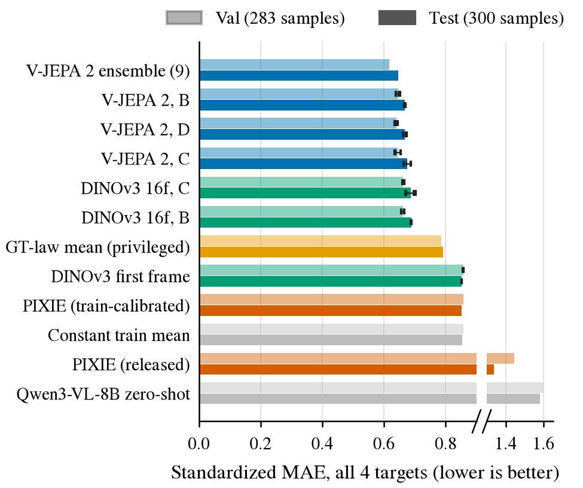
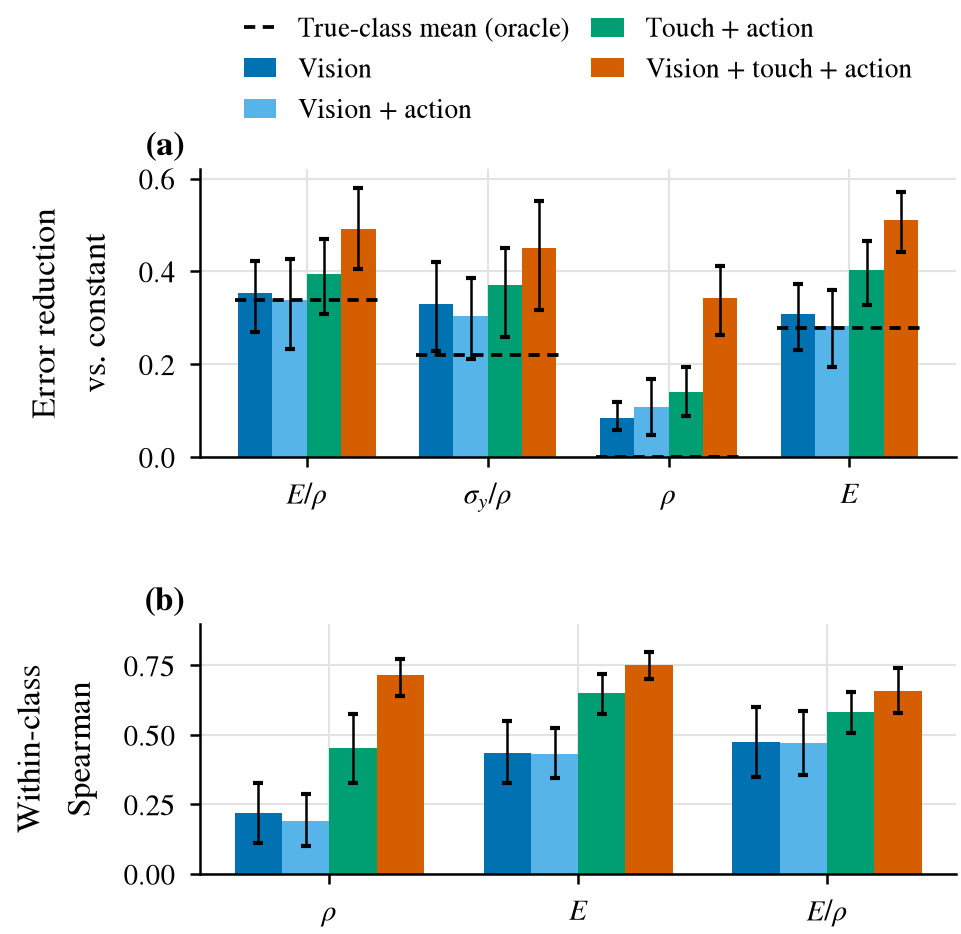
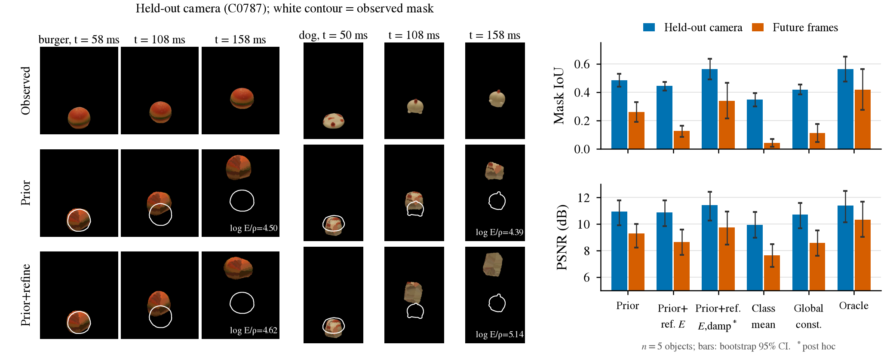

An identifiable video prior removes most of the simulation-in-the-loop search. (a, b) Error on the identifiable parameters versus the number of simulations on validation (60 samples) and held-out test objects (60 samples, 10 objects), with object-bootstrap 95% bands. Starting from the prior, zero simulations beat class-agnostic search after 24; a search told the true class needs 9–12 simulations to catch up. (c) Twins built from the prior predict grasp outcomes about twice as well as per-grasp lookup tables.
Abstract
What can a video identify?

(a) Within-class correlation of predicted vs. true specific stiffness and yield stress on the original benchmark and on IdentiDeform-Vision. (b) Paired pilot in which only damping changes. (c) Scaling E alone changes a press by 47% (jelly) or 1% (metal); scaling E, ρ and σy together changes nothing beyond solver noise, as the similarity law predicts.
Within one class, stiffness is visible
Same object, class and action; E/ρ differs by more than one decade (two camera views each; E/ρ in units of E/(ρ/1000)).
IdentiDeform: two loading regimes
MPM simulations of 3D-Gaussian objects (jelly, metal, plasticine) with identifiable targets, class-independent low damping and object-held-out splits, each observed by three fixed cameras for 4 s. IdentiDeform-Vision applies six actions by prescribed motion and is the testbed for video priors and refinement. IdentiDeform-Touch applies every action through external rigid tools — a press plate over a shape-adapted support and a two-jaw gripper that holds, hangs or swings the object — and records the contact force of every tool.
IdentiDeform-Vision
Three camera views per clip. Jelly springs back, metal keeps a permanent bend or dent after yielding, plasticine keeps the pressed shape.
IdentiDeform-Touch
Three camera views per clip; the plate, support and jaws act on the object but are not rendered. Held actions lift the object off the support so that its own weight loads it (cantilever, hang, swing), which makes stiffness far more visible than displacement-controlled contact. Every tool records the force it applies.
A video prior, and what touch adds

Video prior on IdentiDeform-Vision. A frozen V-JEPA 2 encoder with a light head beats even the privileged class mean; appearance-only predictors, including PIXIE and a vision–language model, are at the level of a constant. Test within-class correlation: 0.63 for E/ρ, 0.79 for σy/ρ.

Video + touch on IdentiDeform-Touch (test, 300 simulations). Force tokens for every tool, fused with video, recover density (within-class Spearman 0.22 → 0.72) and absolute stiffness (0.75), and beat the true-class mean on every target.
Prior + few simulations
The prior gives a starting point in about 6 s; gradient-free simulation-in-the-loop refinement (compass search or CMA-ES) then fits the observed video in our MPM engine. Each clip re-simulates the observed action with one parameter set.
ground-truth simulation
IoU 0.28 · ~8 s
IoU 0.84 · ~6 s
IoU 0.86 · ~32 min
IoU 0.93 · ~2.9 h
ground-truth simulation
IoU 0.51 · ~8 s
IoU 0.77 · ~6 s
IoU 0.97 · ~33 min
IoU 0.98 · ~1.6 h
ground-truth simulation
IoU 0.38 · ~9 s
IoU 0.93 · ~6 s
IoU 0.93 · ~30 min
IoU 0.98 · ~1.7 h
The observed video is itself a ground-truth simulation; PIXIE is a published appearance-based predictor; "no prior" is the same search started from the best class mean, run to convergence (up to 24 simulations). Mask IoU against the observation; times include simulation.
| Simulations k | 0 | 4 | 12 | 24 |
|---|---|---|---|---|
| Validation, 60 samples / 10 objects | ||||
| Best-of-3 class means | – | 0.771 | 0.536 | 0.482 |
| True-class mean† | 0.674 | 0.577 | 0.339 | 0.257 |
| Prior (ours) | 0.344 | 0.327 | 0.283 | 0.236 |
| Test, 60 samples / 10 held-out objects | ||||
| Best-of-3 class means | – | 0.864 | 0.585 | 0.486 |
| True-class mean† (50 samples) | 0.763 | 0.688 | 0.433 | 0.307 |
| Prior (ours) | 0.482 | 0.490 | 0.370 | 0.283 |
| Validation subset, 20 samples: optimizer-matched CMA-ES | ||||
| True-class mean† + CMA-ES | 0.629 | 0.469 | 0.395 | 0.327 |
| Best-of-3 + CMA-ES | – | 0.735 | 0.566 | 0.533 |
| Prior + CMA-ES (ours) | 0.243 | 0.202 | 0.209 | 0.154 |

Initialization quality decides the cost of refinement. Error after refinement is close to linear in the starting error (r = 0.95 after 4 simulations). Every good start ends near the same floor; searching hardening and ν as well does not lower it. The prior's value is to start near that floor without simulation.
Comparison with per-scene methods
| Method | Data (scenes) | Views | Time / scene | |Δlog10E| ↓ |
|---|---|---|---|---|
| PAC-NeRF | PAC-NeRF (4) | 11 | 5.8 h | 0.36 |
| PAC-NeRF | PAC-NeRF (4) | 3 | 2.9–10.8 h | 1.42 |
| Spring-Gaus | Spring-Gaus (3) | 10 | 2.4–5.1 h | n/a |
| PhysTwin | PhysTwin (1) | 3 RGB-D | 31 min | n/a |
| Ours, prior + 3-scene calibration | PAC-NeRF (4) | 3 | 6 s | 0.26 |
| Method | Fit CD | Future CD | Future PSNR | Time / scene |
|---|---|---|---|---|
| Spring-Gaus | 0.0110 | 0.0173 | 18.8 dB | 2.4–5.1 h |
| Ours, prior only | 0.0212 | 0.0178 | 17.2 dB | 2 s |
| Ours, prior + 12 sims | 0.0094 | 0.0143 | 19.5 dB | 2–3 min |
We start from the dataset's first-frame particles (favouring us in geometry) and render unshaded particle splats (disfavouring us in appearance); we are better on both Chamfer distances for two of the three scenes. Feed-forward baselines (PIXIE, Qwen3-VL, appearance only) are compared in the figure above.
Real captures
Real objects have no parameter ground truth, so we test whether twins reproduce what was not used to build them. For five real drops of the Spring-Gaus captures (3 calibrated cameras, 120 fps), we build a visual hull, take the prior's prediction from the videos, replay the drop in our MPM engine and render it into a held-out camera and into future frames.
Columns: observed held-out view; our prior with no simulation; prior + refinement of E with one dissipation parameter fixed from the other objects; class-mean E. The white contour is the observed mask; labels give the future-frame IoU on this camera.
| Twin | Held-out IoU ↑ | Held-out PSNR ↑ | Future IoU ↑ | Future PSNR ↑ | 3D error (cm) ↓ |
|---|---|---|---|---|---|
| Class-mean E | 0.347 | 9.93 | 0.041 | 7.63 | 7.3 |
| Global constant E | 0.417 | 10.69 | 0.111 | 8.56 | 9.0 |
| Prior, 0 sims (ours) | 0.484 | 10.95 | 0.258 | 9.28 | 5.6 |
| Prior + refine E, 12 sims | 0.445 | 10.86 | 0.127 | 8.63 | 7.7 |
| Prior + refine E, dissipation∗ | 0.580 | 11.63 | 0.378 | 10.23 | 3.6 |
| Best E in hindsight | 0.561 | 11.37 | 0.415 | 10.31 | 3.4 |
The prior's twin beats both constant-stiffness twins on all five objects (future IoU +0.22 [0.15, 0.30] over the class mean). Refining stiffness alone overfits the few post-impact frames; one dissipation parameter fixes this, pointing to missing dissipation rather than stiffness as the main gap on real data.

Using the twin for grasping
Evaluating grasps before execution (IdentiDeform-Touch)
A two-jaw gripper grasps the object at its end or center with one of four grip depths and lifts it under gravity. A grasp fails if the object is not carried (drop) or is crushed by more than 5% (damage). Each twin simulates every candidate and predicts its outcome; we compare with executing it under the true parameters.
True execution of four candidate grasps on one object (4,096 tracked MPM particles, coloured by height gained; grey boxes are the jaws), with the outcome predicted by the video–touch twin and by the class-mean twin. On these two objects the video–touch twin predicts all eight candidates correctly, the class-mean twin 2/8 and 6/8.
| Predictor | Macro-F1 ↑ | Accuracy ↑ | Safe precision ↑ |
|---|---|---|---|
| Lookup per grasp | 0.378 | – | – |
| Lookup per grasp and class | 0.341 | – | – |
| Twin, class-mean parameters | 0.676 | 0.754 | 0.41 |
| Twin, video prior | 0.715 | 0.788 | 0.45 |
| Twin, video + touch prior | 0.770 | 0.835 | 0.52 |
Twins predict outcomes far better than lookups over grasp position and depth (+0.30 to +0.39 macro-F1). The video–touch twin is best and beats the class-mean twin (+0.09 [0.01, 0.22]); its margin over the video-only twin is not significant, likely because each probe touches only a small area during a single loading phase.
Damage-aware squeeze (IdentiDeform-Vision)
Each twin simulates six squeeze depths and picks the deepest one whose predicted permanent crush stays within 3% of the object's width; the choice is then executed with the true parameters. Over 55 validation samples (10 objects), twins from the video prior succeed in 82% of cases, against 62% for class-mean twins.
Left: 3DGS rendering of the true execution (jaws not rendered). Right: 4,096 tracked MPM particles with the jaws, side view.
Limitations
- Parameter accuracy is measured in simulation, where ground truth exists; on real data we evaluate replay of held-out views and frames, on five objects.
- Contact forces are simulated, and our probes touch a small area for a short time.
- Refinement needs accurate geometry and a matched engine, and plateaus at a floor set by hardening and ν.
- Zero-shot transfer across engines needs few-shot calibration or in-target refinement.
BibTeX
@inproceedings{identideform,
title = {What Can a Video Tell About Material? Identifiable Video Priors
for Few-Simulation System Identification},
author = {Anonymous},
booktitle = {Under review},
year = {2026}
}